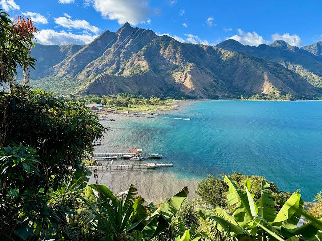

Lago de Atitlan
El lago de Atitlan es considerado uno de los lagos más hermosos del mundo. Está rodeado por bellos volcanes y pintorescos pueblos mayas que atraen a miles de visitantes cada año. Es un destino ideal para quienes buscan naturaleza, cultura y aventura.
